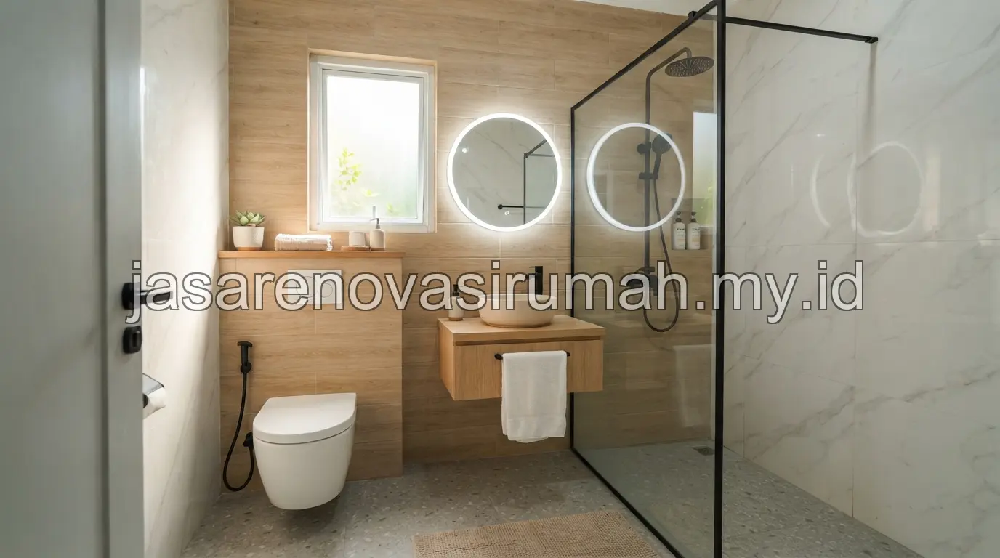
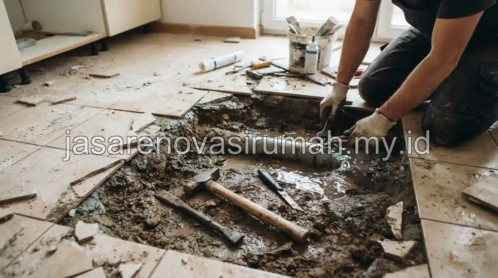

Biaya renovasi kamar mandi ukuran 2x2 meter di Malang secara umum berkisar antara Rp 8 juta hingga Rp 12 juta untuk spesifikasi keramik standar, dan bisa mencapai Rp 18-25 juta untuk spesifikasi premium termasuk perbaikan sistem pipa bawah lantai.
Perbedaan harga ini dipengaruhi oleh pilihan material keramik, kondisi pipa lama, serta apakah ada penggantian sanitari secara menyeluruh atau hanya sebagian.
Berapa Kisaran Biaya Renovasi Kamar Mandi Ukuran 2x2 Meter di Malang?
Kisaran biaya renovasi kamar mandi 2x2 meter dibagi menjadi beberapa tingkatan tergantung spesifikasi material dan tingkat kerusakan yang ditemukan saat pembongkaran.
Berikut gambaran kisaran biaya berdasarkan spesifikasi yang umum dipilih:
| Spesifikasi | Cakupan Pekerjaan | Estimasi Biaya (Rp) |
|---|---|---|
| Standar | Keramik lokal, sanitari standar, tanpa ganti pipa | 8.000.000 - 12.000.000 |
| Menengah | Keramik motif, sanitari duduk, perbaikan sebagian pipa | 12.000.000 - 18.000.000 |
| Premium | Keramik import/motif marmer, sanitari lengkap, ganti total pipa | 18.000.000 - 25.000.000+ |
Kisaran ini bersifat umum dan dapat berubah tergantung kondisi bangunan eksisting, terutama jika ditemukan kerusakan pipa yang tidak terlihat sebelum pembongkaran dimulai.
Apa Perbedaan Spesifikasi Keramik Standar dan Premium untuk Kamar Mandi?
Keramik standar umumnya berukuran kecil dengan motif polos dan harga terjangkau, sementara keramik premium memiliki motif marmer atau tekstur khusus dengan daya tahan dan tampilan yang lebih baik.
Pemilihan spesifikasi sebaiknya juga mempertimbangkan aspek keamanan, bukan hanya tampilan semata, sejalan dengan prinsip pada panduan desain kamar mandi minimalis modern, di mana keramik anti-slip pada area basah tetap menjadi prioritas terlepas dari kelas harga yang dipilih.
Bagaimana Menangani Kebocoran Pipa Bawah Lantai Saat Renovasi Kamar Mandi?
Penanganan kebocoran pipa bawah lantai memerlukan pembongkaran sebagian lantai untuk mengakses jalur pipa, dilanjutkan dengan penggantian pipa yang bocor dan pengecoran ulang sebelum pemasangan keramik baru.

Tahapan umum penanganan kebocoran pipa bawah lantai:
- Identifikasi titik kebocoran menggunakan alat deteksi atau pengecekan manual pada area yang lembap.
- Bongkar sebagian lantai di sekitar titik kebocoran untuk mengakses jalur pipa.
- Ganti bagian pipa yang bocor dengan pipa baru dan uji tekanan air sebelum ditutup kembali.
- Cor ulang lantai dan pasang kembali lapisan waterproofing sebelum keramik baru dipasang.
Biaya penanganan kebocoran pipa ini sebaiknya dimasukkan secara terpisah dalam RAB, karena tingkat kerusakan pipa baru bisa dipastikan setelah pembongkaran awal dilakukan.
Untuk gambaran penyusunan anggaran renovasi secara lebih menyeluruh, Anda bisa mempelajari panduan estimasi biaya renovasi rumah Malang sebagai referensi tambahan.
Renovasi kamar mandi yang menyeluruh, termasuk penanganan pipa bawah lantai, sebaiknya dipercayakan pada jasa renovasi rumah Malang yang berpengalaman menangani kasus serupa, agar hasil akhirnya benar-benar tuntas dan tidak menyisakan masalah kebocoran di kemudian hari.